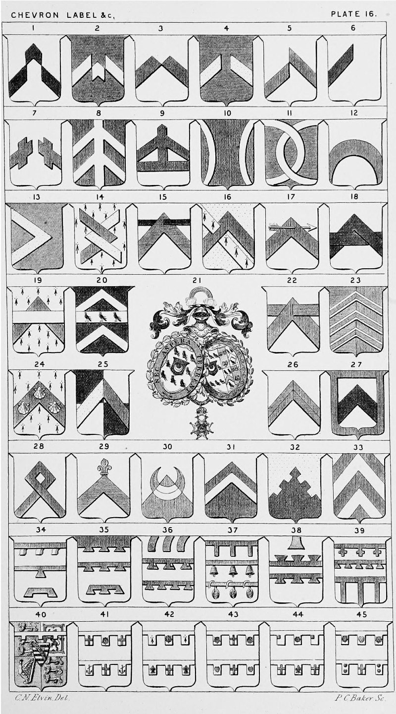

Plate 16.

Plate 16.
- Chevron Rompu, or Downset. Ar. a
chev. rompu sa.
- Chevron Debruised, or Fracted
- Chevron Burst, Eclate, or Split
- Chevron Disjointed, or Brisse
- Chevron Removed
- Chevron Demi
- Chevron Disjointed and crossed
- Two Chevrons Palletted, or Two
Chevrons and Pale conjoined
- Chevron supported, or a Chevron
with beam and standard
- Two Chevrons arched and couched
from dexter and sinister
- Two Chevrons arched, couched and
fretted
- Chevron Arched
- Chevron Couched
- Chevron Two Chevrons couched, fretted
and couped
- Chevron Pierced with a Barrulet
- Chevron Pierced with a Bend. (If op-
pressed the Bend would pass
over the chevron)
- Chevron Pierced with an Arrow, or transfixed with an arrow
- Chevron Fretted with a Fesse, also termed
Debruised and Fretted with a
Bar
- Chevron Oppressed, or surmounted of a
Fesse
- Fesse between Two Chevrons, Sa.
on a Fesse betw. two Chevrons
ar. three Cornish Choughs ppr.
- The Arms of a Knight of the Hanoverian Guelphic Order. See
arms of a Knight of any Order
- Chevron Pierced with a Fesse
- Per-Pale az. and gu., three Chevrons
ar. voided per-pale of the second
and first
- On a Chevron. Erm. on a chev. gu.
three escallops ar.
- Quarterly sa. and ar. a chev. per-pale or and gu.
- Chevron Quarterly per chevron. Also blazoned a chevron per-pale and per chevron
- Ar. a chev. sa. a Bordure gu.
- Chevron with Mascle-head, or chev.
with Mascle top
- Chevron Flory at the top, also termed a
chev. ensigned on the top with
a fleur-de-lis
- Per-Chevron ar. and gu. a Crescent
counterchanged
- Per-Chevron, a chevron counter-changed
- Per-Chevron Crenellée
- Chevronelly of six
- A Label with three tags pendent, or
double labels. Label of one
point, and Label couped with
two points
- Label, or File, of three lambeaux
issuing out of chief. Label of
three points throughout and
Label of three points
- Labels issuing out of Chief embowed.
Label of three points each
charged with a Canton Sinister
and a Label of four points
throughout
- Label of three points. Label with
three bells pendent, or Label
Campaned, and Label with three
pomegranates pendent en-wrapped with a wiure, or
ribbon
- Label issuing out of Chief. Label
in Fesse counterposed with an-
other, or Two files in fesse
endorsed. This is also blazoned
" a Bar gemelles pattee"
- A Label of three points crossed. A
Label of Five points in Fesse,
A File of three points fixed
- Shield of the Prince of Wales is the
same as that of the Sovereign
with label of three points ar. for
difference, and the arms of
Saxony en-surtout
- The Label in Chief is that of the
Princess Royal. The one in
Base of the Duke of Edinburgh
- The Label in Chief is that of the
Princess Alice. The one in
Base of the Duke of Connaught
- The Label in Chief is that of the
Princess Helena. The one in
Base of the Duke of Albany
- The Label in Chief is that of the
Princess Louise. The one in
Base of the Duke of Cumberland
- The Label in Chief is that of the
Princess Beatrice. The one in
Base of the Duke of Cambridge
The Label of His Royal Highness Prince Albert Victor of Wales. P. 25. A f. 1.
The Label of His Royal Highness PrinceGeorge of Wales. P. 25. A f. 2.